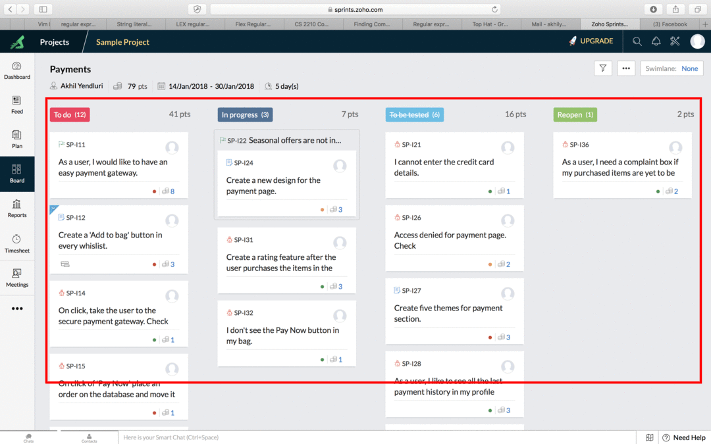
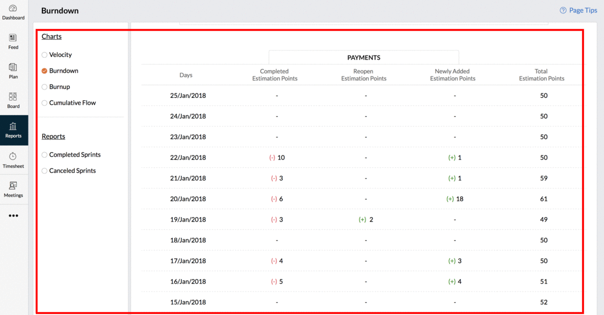

Deliverables for each Iteration
- User Story:
A detailed user story
and todo items.
-
Need visual proof of the completetion of the interation, including coding, unit testing and code integration. To do this go to the BOARD tab in Zoho SPRINT and show the entire history.

-
Reports of the implementation is recorded automatically. To get this go to the REPORT tab in Zoho SPRINT and show the entire project report for the iteration including Cumulative flowchart and BurnDown chart.
